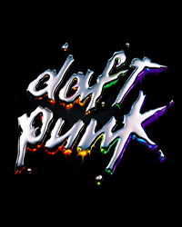
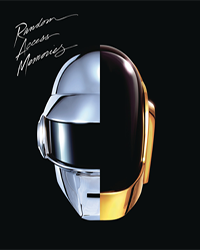

Primeros años (1987 - 1993)
Thomas Bangalter y Guy-Manuel de Homem-Christo se conocieron en Lycée Carnot, una escuela secundaria en París. Los dos se hicieron buenos amigos lo que los llevó a iniciar la banda basada en guitarra, 'Darlin', con Laurent Brancowitz en 1992. Bangalter y Homem-Christo tocaban bajo y guitarra, respectivamente, mientras Brancowitz tocaba la batería. El nombre del trío provenía de la canción de The Beach Boys del mismo nombre, que grabaron junto con una composición original, la cual fue lanzada en un EP de Duophonic Records multiartista. Una reseña negativa de la revista Melody Maker llamó a la agrupación "daft punky thrash" (loca basura punk). Pero en vez de ignorarla, lo encontraron interesante. Como Homen-Christo comentó: «Nos esforzamos demasiado en encontrar [el nombre] 'Darlin', y esto pasó tan rápido». 'Darlin' se desintegró después de lo sucedido, dejando oportunidades de Brancowitz en estar con Phoenix; Bangalter y Homen-Christo formaron Daft Punk y empezaron a experimentar con cajas de ritmos y con sintetizadores.
Era HOMEWORK (1993 - 1999)
En 1993, Daft Punk atendió a un rave en Disneyland París, en donde conocieron a Stuart Macmillan, integrante de la banda Slam y co-fundador de la discográfica Soma Records Quality Recordings. El demo que le dieron a Macmillan formó el debut de Daft Punk con el sencillo «The New Wave», el cuál tuvo una publicación limitada en 1994. El sencillo también contenía la versión final de «The New Wave» llamada «Alive», el cuál se introdujo también en su primer álbum.
Daft Punk regresó al estudio en mayo de 1995 para grabar «Da Funk». Se convirtió en su primer éxito comercial ese mismo año. Tras el éxito de «Da Funk», Daft Punk decidió buscar a un representante. Finalmente terminaron contratando a Pedro Winter, que regularmente promocionaba a Daft Punk y a otros artistas en sus clubes nocturnos.[7] La banda luego firmó con Virgin Records en septiembre de 1996 y realizaron un acuerdo en el que daban licencia a la compañía de producción,
«Da Funk» y «Alive» fueron incluidos en su álbum debut, Homework. El álbum contiene géneros de música como: techno, house, acid house y diferentes estilos de electro, y también es un álbum reconocido por ser uno de las influencias más grandes en el estilo del house de los '90. «Da Funk» fue incluida en la banda sonora de la película The Saint. El sencillo más famoso de Homework fue «Around the World», la cual es reconocida por repetir el título de la canción una y otra vez. Daft Punk también produjo una serie de vídeos musicales dirigidas por Spike Jonze, Michel Gondry, Roman Coppola y Seb Janiak. La colección de videos fue lanzada en 1999 titulada D.A.F.T.: A Story About Dogs, Androids, Firemen and Tomatoes.
Era DISCOVERY (1999 - 2003)
En 1999, el dúo comenzó la producción de su segundo álbum, que había comenzado un año antes. En el 2001, el álbum Discovery fue lanzado, orientado en un estilo synthpop, lo que inicialmente sorprendió a muchos fanáticos de Homework. El grupo comentó que querían re-conectar las actitudes que tenían desde niños. Esto los llevó a usar muestras de canciones de los '70 y '80. El álbum llegó al #2 en el Reino Unido y el sencillo , «One More Time» fue un éxito de club mayor, casi llegando al primer lugar del UK Singles Chart. El álbum también es reconocido por el excesivo uso del auto-tune. Este álbum creo una nueva generación de fans. Los sencillos «Digital Love» y «Harder, Better, Faster, Stronger» también fueron un gran éxito en el Reino Unidos y los Estados Unidos, y «Face to Face» alcanzó la posición #1 en los clubes, aunque tuvo una publicación limitada.[12] Una grabación de 45 minutos tomada de un concierto en Birmingham, Reino Unido de 1997, pero lanzada en el 2001 con el nombre Alive 1997. En el 2003, lanzaron la película animada Interstella 5555: The 5tory of the 5ecret 5tar 5ystem. Daft Punk produjo la película bajo la supervisión de Leiji Matsumoto, al cuál, los integrantes del grupo, se refieren como el héroe de sus infancias. El álbum Daft Club fue lanzado para promocionar el filme. Contiene mezclas del álbum Discovery, este fue solo lanzado por internet por un tiempo limitado.
Era HUMAN AFTER ALL (2004 - 2008)

Empezando el 13 de septiembre y terminando el 9 de noviembre de 2004, Daft Punk dedicó seis semanas para la creación de un nuevo material. El dúo lanzó el álbum Human After All en marzo de 2005. Las críticas fueron mixtas, sobre todo citando a su repetitivo carácter y aparentemente por la corta dedicación al grabado del álbum. Los sencillos extraídos de este álbum fueron «Robot Rock», «Technologic», «Human After All», «The Prime Time of Your Life» y «The Brainwasher». La declaración oficial de Daft Punk sobre el álbum fue: «Creemos que Human After All habla por sí mismo».
Era TRON LEGACY (2008 - 2010)

Después del tour Alive 2007, Daft Punk se enfocó en nuevos proyectos. En una entrevista dada en el 2008, Pedro Winter reveló que el dúo regresó a su estudio en París para trabajar en un nuevo material. Pedro también anunció su renuncia de ser el representante del dúo, para enfocarse en su disquera Ed Banger Records y en su trabajo como Busy P. En otra entrevista, Pedro indicó que el dúo estaban trabajando con una compañía no específica de Los Ángeles. En el 2008, Daft Punk fue ubicado en el posición 38º en una encuesta mundial realizada por la revista DJ Magazine, después de que, un año antes fueron ubicados en la posición 71º. El 8 de febrero de 2009, Daft Punk ganó dos Grammy Awards por su álbum Alive 2007 y su sencillo «[[Harder, Better, Faster, Stronger#Harder, Better, Faster, Stronger (Alive 2007)la mejor del disco |Harder, Better, Faster, Stronger]]».
Era RANDOM ACCESS MEMORIES (2013 - 2021)
Daft Punk comenzó a trabajar en su cuarto álbum de estudio, con la colaboración del cantante y compositor Paul Williams y con contribuciones con el líder de Chic, Nile Rodgers. Williams confirmó sus colaboraciones en dos entrevistas diferentes. Durante una entrevista con Rodgers, afirmó que se reunió con el dúo para discutir lo que iba a ser su próximo álbum, también menciono que el disco iba a salir a mitades de ese año, iniciando este proyecto entre 2010 y 2011.
Después, en mayo de 2012, Giorgio Moroder colaboro con este álbum, grabando un monólogo acerca de su vida en una cabina de voz que contiene micrófonos que van desde 1960 hasta nuestros días (a raíz de esto surgió la canción «Giorgio By Moroder»). Cuando se le preguntó acerca de esto, el ingeniero respondió que cada micrófono se utiliza para representar las diferentes décadas de la vida de Moroder en su monólogo. Rodgers también estuvo presente durante la sesión de grabación. Chilly Gonzales indicó un día que tenía material musical para el proyecto del dúo en un día de sesiones («Within»).
La Separación

El 22 de febrero de 2021, el dúo francés anunció su separación a través de un video subido en sus redes sociales llamado «Epilogue». Este tiene una duración de 7:57 minutos y toma un fragmento de su película «Electroma», del año 2006, y parte de «Touch», canción lanzada en 2013 en el álbum «Random Access Memories». Hasta el momento, el único que se ha pronunciado después del anuncio de su separación ha sido Bangalter, el cual, a través de un noticiero francés, publicó un video con el fragmento final de la película «Tiempos Modernos» de Charles Chaplin; seguido de esto, vemos en una hoja un dibujo de una cara sonriente, y, posteriormente, está escrito lo siguiente: «If love is the answer, you're home», y debajo de esta frase, el nombre «Thomas».